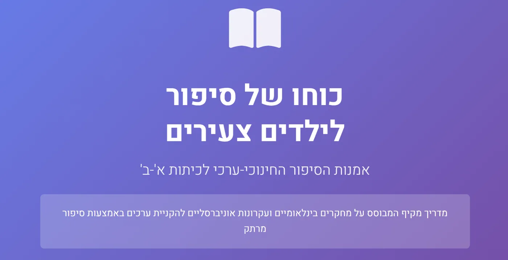

ההרצאה הזו של עומר לווין היא פנינה מקצועית לכל מי שרוצה להבין לעומק את ההבדל בין "לבנות סיפור" ל"לספר סיפור", ובעיקר – איך בונים סיפור שמעורר השראה ומניע לפעולה. הנה סיכום ברור ומובנה של עיקרי התוכן, כולל ההבחנות המרכזיות והטכניקות המעשיות:
📌 ההבחנה המרכזית: לבנות סיפור ≠ לספר סיפור
| לבנות סיפור | לספר סיפור | |
|---|---|---|
| עוסק במבנה, ברכיבים ובמהות של הסיפור | עוסק באיך אני מעביר את הסיפור בפועל – טון, הבעה, קצב | |
| דורש חשיבה תכנונית מקדימה | דורש נוכחות, אותנטיות וחיבור רגשי ברגע האמת | |
| מתאים בעיקר לכותבים, מרצים, אנשי תוכן | מתאים למי שעומד מול קהל ורוצה לרגש |
🎬 שלושת רכיבי הסיפור המעורר השראה
- הגיבור
- צריך להיות דומה לקהל – כדי שיזדהו.
- חיובי – מעורר אהדה.
- יכול להיות אתה בעצמך (אם אתה בעבר דומה לקהל שלך בהווה).
- המנטור
- זה "הגורם החיצוני" שעוזר לגיבור להשתנות.
- רצוי שיהיה דומה למרצה – כי אז הקהל משליך את הערך עליך.
- אם אין מנטור – אפשר להפוך "קול פנימי" לדמות חיצונית (טכניקה נרטיבית).
- הבעיה והפער
- השראה נוצרת ככל שהפער בין השפל להצלחה גדול יותר.
- הפער יוצר תקווה: "אם הוא הצליח מהשפל הזה – גם אני יכול".
🎢 איך לבנות "מסע רגשי" בתוך סיפור
במקום שיא אחד:
- שפל → תקווה קטנה → שפל עמוק יותר → תקווה נוספת → נקודת אור סופית.
כך:
- הקהל מתחבר רגשית בהדרגה.
- מגיעים למקום של שיא רגשי והזדהות, ואז – אפשר לגעת בלב.
🧩 טכניקת החיבור לקהל: ME → WE → YOU
כדי שהקהל יאמץ את המסר אל חייו, השתמש במבנה הבא:
- ME – ספר על עצמך.
- WE – הפוך את הסיפור שלך לאוניברסלי ("כל בני האדם רוצים להרגיש אהובים").
- YOU – דבר ישירות אל הקהל ("גם אתה כשאתה מתנהג כך...").
כך הקהל לא רק שומע – הוא לוקח את הסיפור לחיים האישיים שלו.
💡 מסקנה: השראה = רגש + מבנה
כדי שסיפור יעורר השראה:
- חייב להיות בו גיבור, מנטור ובעיה משמעותית.
- הדרמה צריכה להיות מובנית מראש, לא רק מהלב.
- הסיפור האישי שלך הוא כלי להעברת מסר לאחרים – לא רק שיתוף חוויות.
מחקר עומק של GPT איך לספר סיפור
וכאן יש לכם את זה במצגת יפהפיה
https://www.genspark.ai/api/page_private?id=eivmukwc
